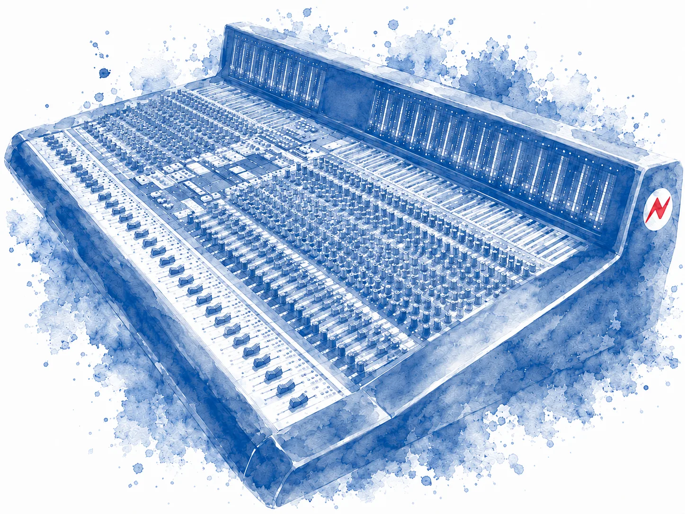

01 · Audio Services
Mix.
Master.
Record.
Professioneller Sound für Musik, Podcast und Medienprojekte. Pakete und Einzelleistungen. Bei Bedarf erstelle ich ein individuelles Angebot.

Mix & Mastering
Mastering Only
Stereo Mastering. EQ, Kompression, Limiting. Optimiert für Streaming und Club. 1 Revision. 1 bis 2 Werktage.
Stem Mix & Master
Bis 6 Spuren. Ideal für Vocals plus Instrumental. Balancing, Effekte, Mastering. 2 Revisionen. 3 bis 4 Werktage.
Full Mix & Master
Bis 12 Spuren. Vocal Tuning, De-Essing, Noise Reduction, Effekte, Automation. 3 Revisionen. Video Feedback möglich. 4 bis 6 Werktage.
Pro Mix & Master
Bis 24 Spuren. Komplexe Arrangements. A cappella, Instrumental, Clean Versions. Revisionen unbegrenzt (fair use). 5 bis 7 Werktage.
Option: Video Feedback mit Mix-Analyse, 25 €
Studio Sessions & Workshops
Instrument Workshop
2 Stunden. Loopstation, Ableton Live, MPC, Maschine oder Signalfluss. Aufgebaut nach deinem Wissensstand, deinen Fragen, deinen Zielen und deinen Visionen.
Studio Session
4 Stunden im Studio. Beats und Tracks bauen: Hip-Hop, Techno, Ambient, Dancehall, alles geht. Hybrid-Setup aus analogen und digitalen Instrumenten, dazu Plugins. Produzieren in einem Umfeld, das Spaß macht. Ganzer Tag (6 Std.): 280 €.
Studio Setup vor Ort
4 Stunden bei dir vor Ort. Wir planen ein Setup, das zu deinen musikalischen Zielen passt: Raum, Monitore, Instrumente, Kabel, Patchbay. Vom Produktionsstudio bis zum nächsten Schritt, dem Recording-Studio. Anfahrt nach Absprache.
Vocal Chain Workshop
3 Stunden. Für Vocalisten und MCs. Wir bauen deine Vocal Chain, analog oder digital, damit du jederzeit selbst in deiner eigenen Chain aufnehmen kannst.
Recording & Songwriting
Studio Recording
6 Stunden. Neumann U87i oder TLM170, Neve Type Chain. Bis zu 12 Kanäle gleichzeitig. Setup, Mikrofonierung, Pegelkontrolle. Zusatzstunden 50 €/h.
Songwriting Session
4 Stunden. Co-Writing, Composing, Ideenentwicklung. Lyrics, Melodie, Beats, Arrangement. Optional: Vocal Recording und Demo. Tagessession inkl. Recording (6 h): 280 €.
Podcast & Audio Restauration
Podcast Aufnahme
6 Stunden. Professionelles Setup und Monitoring. Extra: 30 Min / 30 €. 60 Min / 50 €.
Podcast Postproduktion
Schnitt, Lautstärke, Mastering. Intro und Outro auf Wunsch. Bis 60 Minuten: 100 €.
Audio Restauration
Rauschen, Brummen, Klicks entfernen. Bis 10 Min: 60 €. Bis 30 Min: 120 €. Komplexere Aufnahmen nach Absprache.
AI Music Cleanup
Deine Suno-Exporte und andere KI-Songs, befreit von digitalen Artefakten und dem typischen KI-Gezische. Das Ergebnis klingt analog und fett. Bis 10 Min: 60 €. Bis 30 Min: 120 €.
Extras: Express Service 40 €. On Location Recording nach Absprache.
Releases & Projekte
Ausgewaehlte Arbeiten.
Veröffentlichungen und Studio-Produktionen erscheinen auf 4Spur Records, dem unabhängigen Label aus Berlin. Den ganzen Katalog findest du auf der Label-Seite.